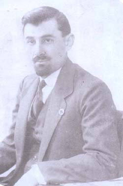
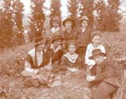

Cyrasimowix Cyrasim3an
| 
|
Cyrasim Cyrasimowu -ovs
sba er5or /a-a3ovm er Ygadyrina ª6rt ;acovho
panagovm1_ovs6barsgagan badyrazmi =amanag na tasalkovm e ¦
ha3dnwovm Irani sahmana3in :awriz ka.akovm1 |
A3ndy. na siraharwovm e
mi ha3 gno] ¦ amovsnanovm nra hyd1Na a3nkan e sirovm ov
undylanovm ha3yrin5or5-ovs linylow hantyr25ir Cyrasimow
azcanovnu 'oqovm5tar2novm e Cyrasim3an1Nra =a-ancn e
Armynag Cyrasim3anu5or badgyrwa/ e
ngarovm1
Armynagi gin` Nwart
C3ovlovm3an
Nwarti ha3ru hoc¦oragan
er5ovsovxi[1<ad law yrcovm er5,ad ha3rynasyr er ov mdyrim
er Raffov hyd1Tbroxovm tasawantylis groni 'oqaryn tasi gysu
ha3ox badmov;3ann er nwirovm1Ta tovr [er calis m3ovs hoc¦oragannyrin5¦
na sdibwa/ dy.a'oqwovm e Acovlis5ordy. ¦ /nwovm e Nwartu1
Nwarti ma3ru ha3 cro. Wr;7 "a'az3ani kov3rn er1A3t
undaniku mdyrim er ha3 cro.nyri ov mdaworagannyri hyd1Nwarti
my/ y.pa3ru` L¦onu5 Aw7 Isahag3ani ungyrnyrix er1Hajaq
nrank hawakwovm ein Nwartynx danu ¦ par2ra2a3n or¦e
cirk gartovm1Yrygo3an un;yrxovmnyrix mygi =amanag5yrp poloru
hovzwyl ov lalis ein H3ovco3i 8:,wa-nyr96i wra5Nwarti y.pa3rn
ov Isahag3anu5 [arajji gadagasirov;3ovnu [zsbylow5'-;gaxnovm
ov /i/a.ovm yn1Hydo5Isahag3ani dovn cnalov =amanag5L¦onn
asovm e78Awo5hima hancisd gcnas ko dovn5isg in2 a3sdy.` myr
danu5amo;ank bidi dan91
 |
Nwartu
¦ Govr.in3an <ov,anigu
Nwartu mdyrim er <7Govr.in3ani
hyd1Nrank mdaworagannyri a3n ,r]anagovm ein5or ovzovm er
gr;ov;3ovn ov lovsaworov;3ovn dara/yl5tasdiaragyl ha3
badaninyrin1Nranx -omandig oc¦orov;3ovnn a3nkan my/
er5or badrasd ein amyn zoho.ov;3an1Yw a3t dramatrov;3amp5<ov,anigi
hov,ovmow5Nwartu !(¼^6 ;7 cnovm e :awriz` tasawantylov ¦4
ovsovxi[nyrin5¦4 a,agyrdnyrin1:awrizovm el na hantibovm
e Armynag Cyrasim3anin5siraharwovm ov amovsnanovm1 !(¼*
;7 :awrizovm /nwovm e Emma
Cyrasim3anu5aba nra ortin` Ymil
Cyrasim3anu1 |
|
|
|
| !(!$ ;7
sgswovm e hama,qarha3in badyrazmu1 Ki[ anx Cyrasim3annyri
undaniku oro,ovm e Ha3asdan dy.a'oqwyl50cnyl ov sadaryl
ha3yrin1 !(!% ;7nrank ha3dnwovm yn Sari.ami,ovm5ordy.
Armynagu /a-a3ovm e hosbidalovm` orbys 8Garmir qa[i9
antam1A3ndy. na waragwovm e difow5mahanovm ¦ ;a.wovm
Sari.ami,ovm1 Nwartin ipr¦ hadovxovm mi covmar yn
dalis5¦ na5yrgov yryqan 2y-kin5cnovm e :iflis ir y.por
mod` mda/ylow5or a3t covmarow dovn ga-ni5saga3n min[¦
dy. e hasnovm5'o.i ar=yzrgman hyd¦ankow5nra ovnyxa/u
hyrikovm e mi hax a-nylov1 Nwarti y.pa3ru 8Mardago[9 ;yr;i
qmpacirn er ¦ kro]u wyrxnovm e a,qadanki5orbys ;.;agix1
Nwartu tar23al ha3 mdaworagannyri ,r]anagovm e1 |
 |
|  |
Nwartu` ir
y.por5ta,nagxagan a-a]nort Simon Zawar3ani ortov5kro] ¦
kro]ortov hyd` :iflisi povsapanagan a3covm ma3isi !6i donin1 |
 |
 |
!(ª* ;7 Emman amovsnanovm e
Hma3ag Calsd3ani hyd5orix mia3n
ovsn e yr¦ovm a3s ngarovm1Hma3agix o[ mi lovsangar [i
bahbanwyl1Badmynk5;y in[ov7 A3t darinyrin ,adyrn ein sdalin3an
hala/anknyrin yn;argwovm1Hydabntwovm e na¦ Emma3i amovsin
Hma3agu5orin pandargovm ¦ cntagaharovm yn ha3dni !(£&;71Emma3i
a.aqinu5or ,ad er sirovm a3t undaniku5ci,yru ca.dni o[n[axnovm e
Hma3agi polor ngarnyru5orbyszi hala/anknyru tataryxwyn1 Hydo5yrp
Emma3i a.]igu tbroxahasag tar2aw5Emman ir amovsnov azcanwan
'oqaryn5ir azcanovnow tbrox nyrga3axryx tsdyru1Kani or a3t
=amanag hala/wovm ein na¦5a3sbys asa/5 8=o.owrti
;,naminyri9 undaniknyru1Yryqanyru [ein qa.ovm 8=o.owrti ;,namov9
yryqa3i hyd5polorn el qovsa'ovm ein5or irynx wra 8,a- ov
'or2ank9 [lini1 Yw ampo.] g3ankovm Emman [garo.axaw ha.;aharyl
sdalin3an darinyri a3t sarsa'u1Na [er qosovm tra masin5qovsa'ovm
er badasqanyl harxyri1Na mi,d 's'alow ov ,,n]oxow er qosovm5kani
or Sdalini sdwyru yrpyk [wyraxaw nra g3ankix1Yw ir qordagwa/
g3anki za3rov3;u a3tbys el [ardaha3dyx1Emman abryx ov my-aw`
,ovr;yru sy.ma/5hamr1
Harxazrov3x
Emma3i tovsdr`
}ymma Cyrasim3ani
hyd
6@yr
zcaxovmnyru abrili ksan[orsin1
6An2amp myr undanikin
y.y-nu [i tibyl5isg sowydagan garcyru ;ov3l [ein dalis
dy.ygov;3ovnnyr sdanal a3t masin1Im hydakrkrov;3ann i
badasqan` ungyrovhis dwyx Anri Parpii cirku5oru gartalow
ys dy.ygaxa amyn in[i masin1A-a]in zcaxo.ov;3ovns
sarsa'n er7zarmaxa na¦ fransiaxov
garygxanki5xawagix srdi ovnagov;3amp1Hydo xanganovm ei
zcaxovmnyrs ardaha3dyl5pa3x m3ovsnyru hagwa/ [ein tran
antrata-nal1Y.y-nu 'ag ;yma er5dapov1 Wa;sovnagannyrin
gamax6gamax sgsyxin ;yman paxyl1
6I|n[
agngaliknyr ovnyk abaca3ix1
6Myr abra/u g3ank
[er5m,dagan waq ov arcylk5ah ov to.7ma3rs min[¦
g3anki wyr]u 's'salow er qosovm1#o;anasovnagan
;wagannyrix mi ki[ trov;3ovnu 'oqwyx1Isg a3sbixi
azadov;3an masin yrazyl el [eink garo.1A3nbys or5tovk
2yr g3anku ar=¦oryk1
6I|n[
gar/ik ovnyk 8Ordy. hax a3ndy. gax9 asaxwa/ki masin1
6Im o.] dohmi
badmov;3ovnu haga-agn e abaxovxovm7anunthad
inknazohov;3ovn5a3lasirov;3ovn5an2novraxov;3ovn` hanovn
martov ¦ ha3ryniki1 A3t asaxwa/kow ;y
a-a]nortwyin5Nwart dadigu o[ ;y gcnar :awriz` [arka,
ovsovx[ov;3an5a3l a-ok6'a-ok gamovsnanar ir harovsd
'ysaxovnyrix mygi hyd5¦ Armynag babn el difi
'oqaryn a3l 8barc¦9 gsdanar jagadacrix1 |
|
|
|
|